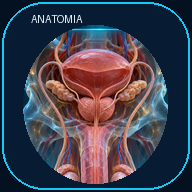

ANATOMIA IMMERSIVE 3DROTEIRO PRÁTICO • SISTEMA GENITAL MASCULINO
UNIVERSIDADE ESTADUAL DE MARINGÁ • MEDICINA
Sistema Genital Masculino
Anexe quantas imagens, fotografias e arquivos desejar a cada estrutura. Selecione os itens e gere um PDF A4 com as imagens completas, sem cortes.
Carregando dados locais...
0 estruturas0 marcadas0 imagens0 imagens marcadas0 arquivos